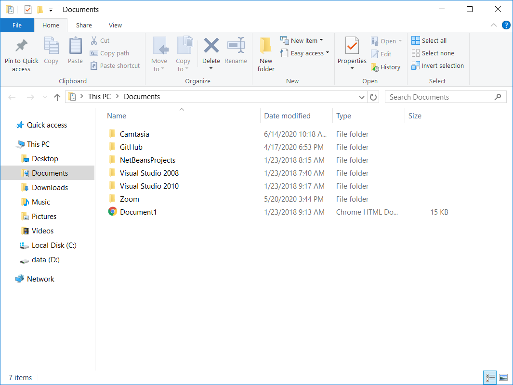

Час. Организација података на рачунару¶
- На овом часу ћемо говорити о:
потреби да податаке организујемо;
начинима организације података;
управљању подацима.
У свом дому, ствари (фрижидер, телевизор, одећа, књиге,…) имају своје место. У фрижидеру чувамо храну, док свеске и књиге слажемо у фиоке радног стола. Свеску из математике никада не тражимо у фрижидеру. Исту логику треба да пренесемо и на свој дигитални уређај.
Сваки дигитални уређај, било да се ради о десктоп рачунару, лаптопу, таблету или паметном телефону стално користи различите податке за обављање многих задатака. Због свега тога, подаци (слике, текст, видео и звучни записи, презентације,….) треба да буду на свом месту (да буду организовани), увек лако и брзо доступни.
Морамо имати на уму да су неорганизовани подаци налик радном столу на коме су свеске и књиге разбацане на све стране. Сигурно ћемо на таквом столу веома тешко за кратко време пронаћи оно што тражиш. Једино решење је да кренемо са сређивањем стола.
Датотека (већина људи користи назив фајл) је место у које дигитални уређај уписује информације које желимо да сачувамо. У једну датотеку дигитални уређај може да смести било шта: програме, документе које смо сами креирали, податке важне за сам систем, … Свака датотека има своје име и екстензију. На пример: ikt.txt, где је ikt име датотека, а .txt екстензија.
На основу екстензије, можемо да одредимо коју врсту података садржи датотека (слика, текст, видео, звук, презентација, извршни програм,…), а често и програм који ју је направио. На доњој слици приказани су примери неколико врста датотека

Постоји много различитих типова датотека које можемо да користимо. Зависно од тога да ли се ради о тексту, слици, звуку или видеу постоје различите врсте датотека. Све датотеке је потребно да се организују, тако што их смештамо у фасцикле, које се често називају фолдери. У једној фасцикли могу бити смештене друге фасцикле.
Фасциклу ћеш препознати по карактеристичној иконици која личи на картонску фасциклу  .
Свака фасцикла има своје име. На пример: IKT.
Имена датотека и фасцикли не смеју да садрже следеће знакове: < > : ” / | ? * у Windows оперативном систему.
.
Свака фасцикла има своје име. На пример: IKT.
Имена датотека и фасцикли не смеју да садрже следеће знакове: < > : ” / | ? * у Windows оперативном систему.
Задатак:¶
На следећој слици су бројевима од 1 до 5 означени фасцикла и датотеке.

-
Tвој одговор није тачан. Покушај поново!
- фасцикла
- 1
- датотека који садржи слику
- 2
- датотека који садржи текст
- 3
- датотека који садржи презентацију
- 4
- датотека који садржи извршни програм
- 5
Сви оперативни системи садрже неколико основних (системских) фасцикли које можеш да користиш за организацију података.

Оперативни системи омогућавају организовање података коришћењем програма Explorer (Windows) који омогућава креирање, брисање, премештање и копирање датотека и фасцикли.
{kind=link}
Креирање фасцикли¶
Најједноставнији начин да креирамо нову фасциклу је да кликнемо десним тастером миша на место где желимо да направимо фасциклу и одаберемо опцију опцију Nеw (1) → Folder (2).

Важно је да не заборавимо да именујемо нови фолдер укуцавањем жељеног имена, и притиском на тастер Ентер.
Опис поступка за креирање фасцикле можете погледати на доњем видеу:

Koпирање и премештање датотека и фасцикли¶
Програми за организовање датотека и фасцикли омогућавају њихово копирање и премештање. Ове акције можемо да урадимо на више начина.
Поступак копирања датотеке или фасцикле:
одабир једне или више датотека /фасцикли;
десни клик или дужи притисак на жељену датотеку/фасциклу;
одабир опције Copy;
бирање места (фасцикле) на које желимо да је копирамо;
десни клик и одабир опције Paste.
Након акције копирања, одабране датотеке/фасцикле појављују се на два места (у фасцикли из које су копирани и у фасцикли у коју су копирани).
Поступак премештања датотеке или фасцикле:
одабир једне или више датотека /фасцикли;
десни клик или дужи притисак на жељену датотеку/фасциклу;
одабир опције Cut;
бирање места (фасцикле) на које желимо да је копирамо;
десни клик и одабир опције Paste.
Опис поступка за копирање и премештање фасцикле и датотека можете погледати на доњем видеу:
Важно:
Одабир датотека и фасцикле које нису једна поред друге бирамо тако што, на тастатури држимо притиснут тастер Ctrl, а другом руком означавамо (левим тастером миша) жељене датотеке и/или фасцикле.

Одабир датотека и фасцикле које су једна поред друге бирамо тако што одаберемо прву датотеку/фасциклу, а затим, на тастатури притиснемо и држимо притиснут тастер Shift, а другом руком кликнемо последњу у низу.
{kind=link}
Опис поступка за одабир фасцикла и датотека можете погледати на доњем видеу:
За разлику од копирања, након акције премештања, одабране датотеке/фасцикле појављују се само у фасцикли у коју су премештене.
Када копирамо или премештамо фасцикле ми копирамо, односно премештамо и све датотеке у оквиру тих фасцикли.
Промена имена датотеке и фасцикле¶
Десним кликом миша на жељену датотеку и/или фасциклу (1) и одабиром опције Преименуј (Rename) (2), добијамо могућност да укуцамо ново име (3), које потврђујемо притиском на тастер Ентер на тастатури.

Опис поступка за преименовање фасцикле или датотека можете погледати на доњем видеу:
Брисање датотека и фасцикли¶
Датотеке/фасцикле бришемо се тако што десним кликом миша означимо жељену датотеку/фасциклу (1) и одаберемо опцију Delete (2).

Корисницима дигиталних уређаја често се дешава да случајно или грешком обришу датотеку или фасциклу.
Имајући у виду овакво искуство, оперативни системи нуде могућност брисања у два корака:
обрисана датотека/фасцикла смешта се у Канту за отпатке (Recycle Bin у Windows-у);
неповратно брисање обавља се у Канти за отпатке, тако што десним кликом миша означимо жељену датотеку/фасциклу и одаберемо опцију Delete.
Канта за отпатке дизајнирана је тако да датотеке/фасцикле које се у њој налазе могу бити враћене у фасциклу из које су обрисане. Довољно је да кликнемо на опцију Restore this item (Windows).
Канту да отпатке можемо да испразнимо кликом на опцију Empty Recycle Bin (Windows).
Важно је да се зна да када се фасцикла обрише, биће избрисане све датотеке и фасцикле који се у њој налазе.
Опис поступка за брисање фасцикле или датотека можете погледати на доњем видеу:
Опис поступка за брисање фасцикле или датотека можете погледати на доњем видеу:
Проналажење датотека и фасцикли¶
Ма колико добро биле ораганизоване датотеке и фасцикле, дешава се да заборавимо где се нека од њих налази. У оваквим ситуацијама треба да кориситиш претраживање  .
Довољно је да у простор за претраживање
.
Довољно је да у простор за претраживање  унесемо назив или део назива датотеке/фасцикле и притиснемо тастер Ентер са тастатуре.
унесемо назив или део назива датотеке/фасцикле и притиснемо тастер Ентер са тастатуре.
Опис поступка за претрагу фасцикле или датотека можете погледати на доњем видеу:
- Шта смо научили?
да се датотека (фајл) користи за смештање података;
да је фасцикла (фолдер) је место где се чувају датотеке;
да је екстензија додатак на основу кога можемо да одредимо садржај фајла.